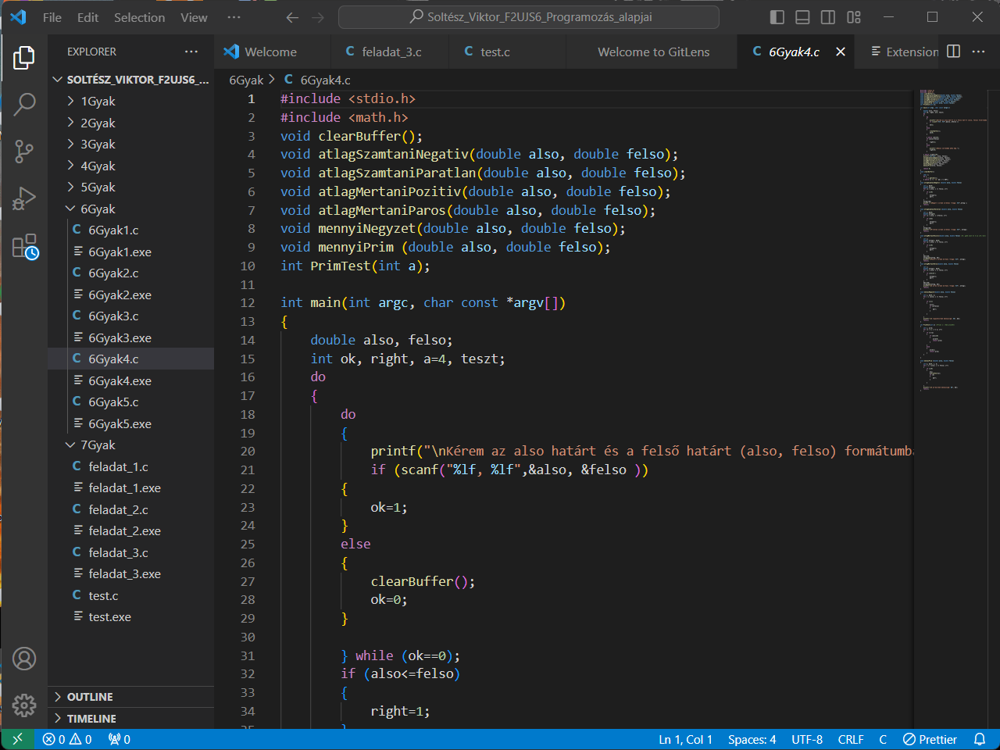

Programzás alapjai
Ez a kurzus a C nyelv megismerésével és használatával foglalkozik.
Tematika
- 1. hét:
Tantárgyi követelmények ismertetése.
- 2. hét:
A számítógép és a programozása. Programozási nyelvek.
- 3. hét:
A C nyelv szintaktikai elemei. Változók, típusok operátorok és kifejezések.
- 4. hét:
A C nyelv utasjtásai. Feltételes utasítások.
- 5. hét:
Ciklus utasítások.
- 6. hét:
Függvények
- 7. hét:
Szünet
- 8. hét:
Szünet
- 9. hét:
Egy dimenziós tömbök és mutatók. Sztringek és kezelő függvényeik.
- 10. hét:
Alapalgoritmusok III. (keresés, rendezés) Kétdimenziós tömbök, mutató tömbök.
- 11. hét:
Tárolási osztályok, memóriakezelés. Függvénykönyvtárak és header állományok. Rekurzió
- 12. hét:
Struktúrák, struktúra tömbök. Típusdefiníció. Fájlkezelés.
- 13. hét:
Változó hosszúságú paraméterlistás függvények. A C fordító működése, az előfeldolgozó szerepe; előfordítónak szóló direktívák.
- 14. hét:
Zárthelyi dolgozat pótlása.